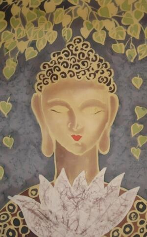

在无量劫前，有一位乡下人，曾经追随宝体佛
无量劫后，宝塔已无影无踪，而这位比丘仍然生生世世护持
六岁的云童是一位聪明灵慧的美少年，正在雪山之南追随着一位大
没有多少日子，聪慧的云童就学会了很深的毗陀论。他再度垦求老师放他下山，珍宝大师知道离别的时候到了，就应允他下山。于是云童拜别的恩师，挥别那辉映在白云之中心灵的故乡。
像一朵安祥的云，云童来到了输罗波奢城。只见城里城外，到处张灯结彩，好不热闹。原来，有一位
在法会上，众位婆罗门看到这位端正无双的美少年，都以为是梵天神降临。却见云童
“
“我们诵持婆罗门咒术”
“我有一论，名为毗陀论，是佛菩萨所说妙法，如蒙不弃，愿乐持诵，以表微忱。”
“好极了，就请法施，我们洗耳恭听！”
云童用清净悠扬的
于是，大家公推云童登上首席，承受大富豪最慷慨的供养。云童在数不清的宝物之中，挑选了一根黄金手杖，一只黄金水瓶，还有一个黄金饭钵，作为献给珍宝大师的礼物。然后就飘然而去……
像一朵飘逸的云，云童又来到了莲华城。莲华城里打扫得分外地洁净，人们的脸上都绽放著莲华一般的笑容。云童十分的惊异，问过当地人才知道，城里的人们正在准备迎接一件天大的喜事，燃灯佛接受降怨王的邀请，马上就要光临莲华城
云童也欣喜万分，他想：和
于是，云童选择芬芳皎洁的莲花来布施奉献，以表达清净吉祥的佛法，是源自一颗诚挚虔敬无染的心灵。但是，云童走遍了莲华城根本就买不至一朵鲜花。因为，降怨王有圣旨，鲜花一律由官府收购，再由王室供养燃灯佛，人民不得私自拥有。所以，云童不但买不到鲜花，甚至于连华曼、香油之类的供品都买不到。眼看着半天的时间已经过去了，云童仍然在城里到处寻找。
忽然，他眼睛一亮，发现一位青衣少女迎面而来，她手里抱着的不正是一束白里透红含苞待放的莲花吗？云童赶快上前施礼，请求少女把花卖给他。
少女急着说：这七茎莲花，是我违背国王的旨意，冒险为自己准备，特地要供养燃灯佛的，我不能卖给你。
云童说：如来出世，百千万劫，才能一遇，我想藉此鲜花在燃灯佛的面前种下善根，并且藉此诚，发愿将来证道成佛度化无量的众生。我愿意用千百倍的代价向您买下其中的五茎莲花。喏，这是我全身所有的五百两，姐姐，请您成全吧！
少女听他这么一说，也眼睛一亮，她略事沉呤，若有所悟，开口说道：嗯，我看您身心勇猛，端正无双，将来在菩提道上，必定能够修成正果，如果您不嫌弃我容貌平凡，答应在成佛以前，生生世世娶我为妻，我就送您五茎莲花，达成您的愿望。否则我的花是不卖的。
云童听了，觉得十分的突然，但是他心地澄明，坦然地说：姐姐，您言重了，我是一个清静的修行人，早已将此身心奉尘刹，发愿生生世世上求佛道，下化众生。我必须割舍一切人间的贪著，在菩提路上才能了无挂碍，修行人以布施为重，布施是
“我也是
云童沉思了良久，然后叹了口气含泪说道：为了有缘供养燃灯佛，好！我答应娶你为妻。但愿您能世世种下善根，和我一起奔向菩提大道。
于是，少女高兴得跳起来，她立刻把五茎莲花交给了云童，接着把剩下的两茎也交给了他，并且说：这两茎莲花，请您代替我供养燃灯佛，我们莲花要一起布施，我们要生生世世同心供养，同心布施。
光明遍照的莲华城，降怨国王率领着王公贵族，文武百官和嫔妃宫娥等一行人，有的捧着鲜花，有的提着香油，有的持着华曼，有的焚香点烛，浩浩荡荡，隆重而尊敬的来迎接燃灯佛，这时候道路的两旁已经站满了人群，有的双手合十，有的喃喃的赞诵佛号，大家兴奋而急切地盼望着燃灯佛的来临。
燃灯佛果然来了，在国王、妃嫔、贵族、文武百官和修行人顶礼迎接之后，缓缓地走了过来。兴奋的人群已经静止，大家静静的瞻仰佛陀清净的法身，就像瞻仰一轮正在移动的慧日，
就在此刻，云童悄悄的把七茎莲花往空中抛去，并且发愿道：愿燃灯佛怜悯我云童的诚，受此七茎莲花，愿我末来得成正果，如燃灯佛！说也奇怪，刹那间，七茎含苞待放的花苞并竟然绽放成七朵鲜艳欲滴的莲花。然后直飞向前方，停留在佛陀的头顶上，花叶向下，花朵朝下，瞬间，五朵莲华化成一幢美丽庄严的大青莲华宝盖，另外两朵则护住佛的双肩，一起随着燃灯佛的前进，而缓缓的移动。
这项奇迹，引来一阵赞叹！却没有人注意到这七茎莲花从何而来，于是王公贵族们纷纷把鲜花抛向空中，这些鲜花都纷纷散落在道路两旁，老百姓纷纷就地膜拜，有些富人把各式各样的昂贵的衣服脱下来，铺放在燃灯佛行脚的前方。云童的身上只有一件破旧的鹿皮，他也把唯一的鹿皮脱下来，铺在地上，有人嫌它肮脏，把它抛到远处去。云童赶快跑去拾起来，心里不禁暗自神伤。
此时，奇怪的事情又发生了，在燃灯佛的前方，居然出现一片恶臭秽气冲鼻的烂泥地，跟随在佛两侧的降怨国王、王公贵族以及所有民众立刻直觉地以手掩鼻，退赴走避，一片嘈杂慌乱。
云童见状，心中只有一个念头，我一定要用尽一切的方法来护持燃灯佛清静的莲足。于是云童一个箭步冲到烂泥地前，将身上的鹿皮脱下，铺在烂泥上，鹿皮太小，不足以覆盖整片烂泥。云童便将自己的发吉拆下，向佛跪地
密密麻麻的人群为之震慑，原本议论纷纷的群众，忽然间鸦雀无声，四周一片寂然，只见燃灯佛眉间放光，面容肃穆地向前跨出一大步，垂手立在中央，转身面向降怨国王等诸群众，声音如狮子吼，他说：只有我能过此人之身，其余人等！佛以
说罢，燃灯佛安祥地踩上云童的背脊，此时大地六种震动，莲华城刹时变成了一片黄金宝色，俨然成这一座无上胜妙地，离垢清静圆。当下燃灯佛正式为云童授记：善哉善哉，善男子，汝过无量阿僧祗劫，当得佛号释迦牟尼、如来、应供、正遍知、明行足、善逝、
这时天雨曼陀罗华，莲华城内百花绽放，国王、王公贵人和满城百姓都充满了法喜，天龙八部、诸天护法也齐声为他赞叹欢唱。
此时，云童赤着身子顶
云童就是后来